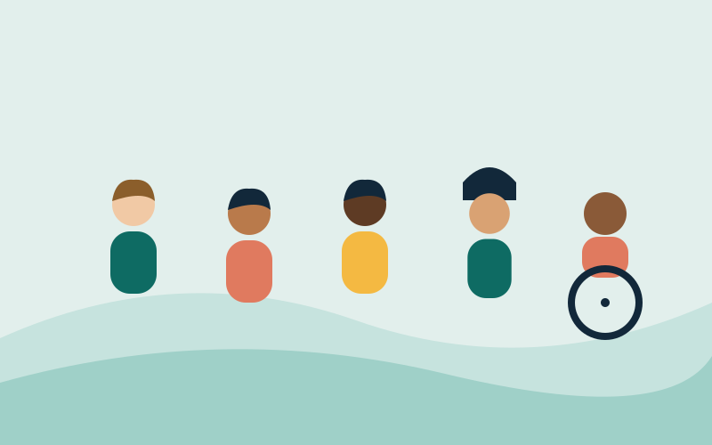

What we built in
- Semantic HTML5: header, nav, main, section, footer, and one heading structure per page.
- A “Skip to content” link and full keyboard use. Focus is always visible.
- Alt text on every image. Videos have captions and a text transcript.
- Text size button (100%, 115%, 130%) and a light/dark theme button.
- High contrast colors. Meaning is never shown by color alone.
- Touch targets at least 44 px tall. Layout adapts to small screens.
- Respects “reduce motion” settings. Works with JavaScript turned off, except the search tool.
Keyboard tips
Press Tab to move forward, Shift+Tab to go back, Enter or Space to activate buttons, and Esc to close the details window.
Known limits
- The videos have no audio. A spoken version is not yet available.
- External sites that we link to may not be as accessible.
- The site is in English with some Filipino phrases.
Tell us about a barrier
Contact the author on the About page. We aim to respond within a week.
